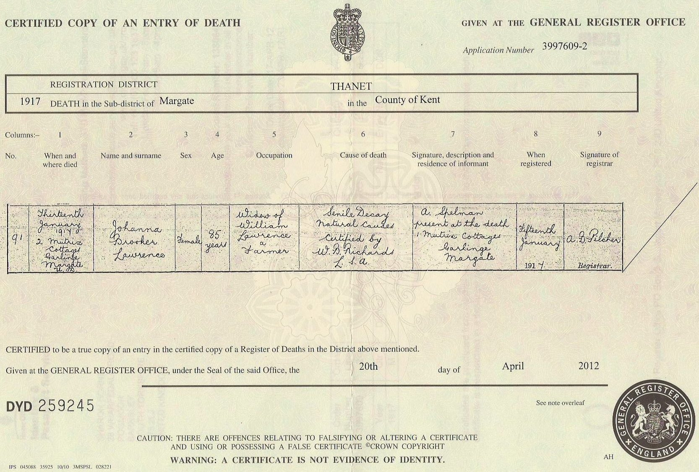
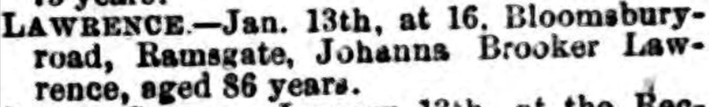
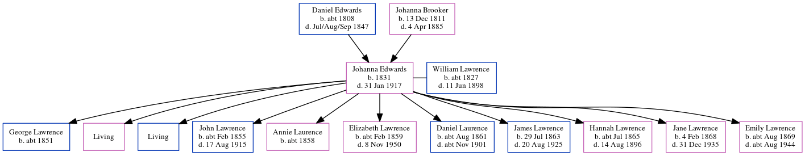

Johanna Brooker Lawrence (née Edwards) 1831 - 1917
[ Home ] | [ Calendar ] | [ Surnames Index ] | [ Errors ] | [ Family History ]The child of Daniel Edwards (a labourer) and Johanna Brooker (a pauper char woman), Johanna Edwards, the great-great-grandmother of Nigel Horne, was born in St Lawrence, Thanet, Kent, England in 18311,2,3,4,5,6,7, was baptised there on 30 Jan 1831 and also married William Lawrence (a harbour labourer with whom she had 11 children: George, Mary Carter, William, John, Annie, Elizabeth, Daniel, James, Hannah, Jane and Emily, along with 2 surviving children) there on 22 Nov 18519.
During her life, she was living at her birthplace on 6 Jun 184110 and in 18512 (the same place as her parents had been living in 1841); on Chapel Lane, St Lawrence, Thanet, Kent, England on 7 Apr 186112; at Rear of Southwood Lodge, St Lawrence in Thanet on 2 Apr 187111; at 3 Providence Cottage, St Lawrence in Thanet on 5 Apr 18915 - less than a mile from her great-niece Emily Lawrence who was living at 10 Claremont Gardens, Ramsgate, Kent and her nephew James Lawrence who was living at 10 Claremont Gardens, Ramsgate, Kent -; at 3 Lorne Road, St Lawrence in Thanet on 31 Mar 190113, when she was living with her daughter Elizabeth, following the death of her husband on 11 Jun 1898; and at 16 Bloomsbury Road, Ramsgate, Kent on 2 Apr 191114 - less than a mile from her great-niece Emily Lawrence who was living at 13 Ashburnham Road, St Lawrence in Thanet and her great-great-niece Lilian Lawrence, great-great-nephew Frederick Cowell and great-great-nephew Charles Cowell who were living at 13 Ashburnham Road, St Lawrence in Thanet -.
She died on 31 Jan 1917 at 2 Mutrix Cottages, Garlinge, Kent8 (senile decay).
Parents
- Daniel was born c. 1808
- Johanna was born on 13 Dec 1811
Children
- George was born c. 1851
- John was born c. Feb 1855
- Annie was born c. 1858
- Elizabeth was born c. Feb 1859
- Daniel was born c. Aug 1861
- James was born on 29 Jul 1863
- Hannah was born c. Jul 1865
- Jane was born on 4 Feb 1868
- Emily was born c. Aug 1869
Citations
- 1841 England Census Online publication - Provo, UT, USA: The Generations Network, Inc., 2006.Original data - Census Returns of England and Wales, 1841. Kew, Surrey, England: The National Archives of the UK (TNA): Public Record Office (PRO), 1841. Data imaged from the National
- 1851 England Census Online publication - Provo, UT, USA: The Generations Network, Inc., 2005.Original data - Census Returns of England and Wales, 1851. Kew, Surrey, England: The National Archives of the UK (TNA): Public Record Office (PRO), 1851. Data imaged from the National
- 1861 England Census Online publication - Provo, UT, USA: The Generations Network, Inc., 2005.Original data - Census Returns of England and Wales, 1861. Kew, Surrey, England: The National Archives of the UK (TNA): Public Record Office (PRO), 1861. Data imaged from the National
- 1871 England Census Online publication - Provo, UT, USA: The Generations Network, Inc., 2004.Original data - Census Returns of England and Wales, 1871. Kew, Surrey, England: The National Archives of the UK (TNA): Public Record Office (PRO), 1871. Data imaged from the National
- 1891 England Census Online publication - Provo, UT, USA: The Generations Network, Inc., 2005.Original data - Census Returns of England and Wales, 1891. Kew, Surrey, England: The National Archives of the UK (TNA): Public Record Office (PRO), 1891. Data imaged from The National
- 1901 England Census Online publication - Provo, UT, USA: The Generations Network, Inc., 2005.Original data - Census Returns of England and Wales, 1901. Kew, Surrey, England: The National Archives of the UK (TNA): Public Record Office (PRO), 1901. Data imaged from the National
- 1911 England Census Online publication - Provo, UT, USA: Ancestry.com Operations, Inc., 2011.Original data - Census Returns of England and Wales, 1911. Kew, Surrey, England: The National Archives of the UK (TNA), 1911. Data imaged from the National Archives, London, England.
- England & Wales, Death Index: 1984-2005 Online publication - Provo, UT, USA: The Generations Network, Inc., 2007.Original data - General Register Office. England and Wales Civil Registration Indexes. London, England: General Register Office. © Crown copyright. Published by permission of the Cont
- England & Wales, FreeBMD Marriage Index: 1837-1915 Online publication - Provo, UT, USA: The Generations Network, Inc., 2006.Original data - General Register Office. England and Wales Civil Registration Indexes. London, England: General Register Office. © Crown copyright. Published by permission of the Cont
- 1841 England, Wales & Scotland Census - Findmypast (was age 10)
- 1871 England, Wales & Scotland Census - Findmypast (was age 40 and the wife of the head of the household)
- 1861 England, Wales & Scotland Census - Findmypast (was age 30 and the wife of the head of the household)
- 1901 England, Wales & Scotland Census - Findmypast (was age 71 and the mother-in-law of the head of the household)
- 1911 Census for England & Wales - Findmypast (was age 80 and the mother in law of the head of the household)
Media
William Laurance - Johanna Brooker Edwards - marriage certificate

Johanna Brooker Edwards - death

Thanet Advertiser - 27 Jan 1917

Canterbury Marriages - GBPRS/CANT/M/97021373/2
1871 England, Wales & Scotland Census Transcription - GBC-1871-0014304082
Canterbury Baptisms Transcription - GBPRS-CANT-B-96402239
England Marriages 1538-1973 - R_848394699/2
England & Wales marriages 1837-2008 - BMD/M/1851/4/AH/000668/038
England & Wales deaths 1837-2007 - BMD/D/1917/1/AZ/000718/025
1841 England, Wales & Scotland Census - GBC/1841/0013942759
1871 England, Wales & Scotland Census - GBC/1871/0014304074
England Births & Baptisms 1538-1975 - R_884657749
Family Tree
Map
Generated by ged2site. Last updated on Jul 3, 2024
Known Issues
Date of baptism (30 Jan 1831) before date of birth (1831)
Date of residence (6 Jun 1841) differs from mother's in same year (6 Apr 1841)
6 Jun 1841: Not living with either parent in childhood when aged 10
Census information missing between Census UK 1871 and 1891 England Census